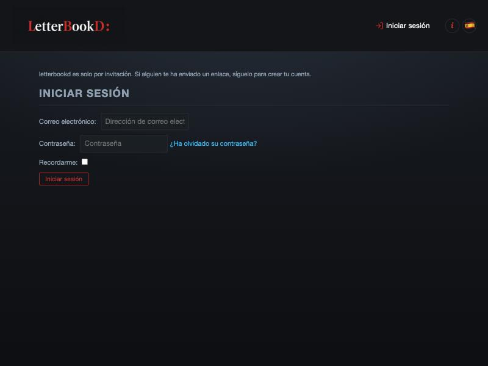

Conexión
Para qué sirve: Entrar en tu club. letterbookd es privado: el acceso se hace mediante un enlace de invitación. Si te han enviado un enlace, síguelo; si no, usa esta página para retomar tu sesión.

Recorrido
Llegas aquí si no has iniciado sesión, o al hacer clic en «Conexión» arriba a la derecha. Escribe la dirección de correo de tu cuenta y tu contraseña, y luego haz clic en «Conexión». Puedes marcar «Recordarme» para seguir conectado en este navegador. El enlace «¿Olvidaste tu contraseña?» envía un correo de restablecimiento; vuelves aquí con una contraseña nueva. Tras conectarte, aterrizas en el inicio.
Cadenas de acción
Cada fila describe un disparador en la interfaz, el modal o formulario que abre, y el efecto producido.
| Disparador | Modal / Campos | Efecto |
|---|---|---|
| Botón «Conexión» (formulario principal) | Correo electrónico (obligatorio), Contraseña (obligatoria), Recordarme (casilla, opcional) | Sesión iniciada y redirección al inicio. Si hay un error, el formulario se recarga con un mensaje claro (dirección desconocida, contraseña incorrecta). |
| Enlace «¿Olvidaste tu contraseña?» | Formulario de solicitud por correo (página aparte) | Se envía un enlace de restablecimiento a la dirección indicada. Sigue el enlace, elige una contraseña nueva e inicia sesión de nuevo. |